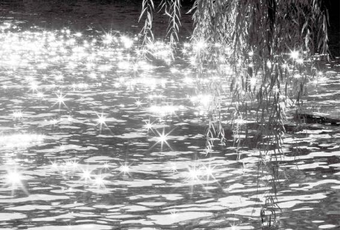
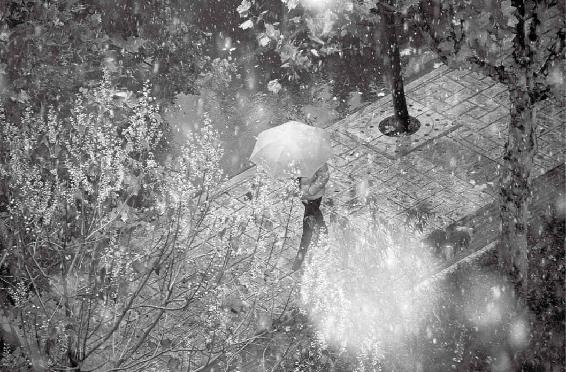

引起你情绪波动的能量或信息，都叫“邪气”。让你大喜、大悲、大怒、大惊、大恐的东西，都是虚邪。所以“虚邪”后面接着一句话叫“避之有时”，教你不要迎上去，要躲着它。
美好的心态或言语，看似虚无，其实也是一种正能量，会带给人意想不到的惊喜。
经文：
夫上古圣人之教下也，皆谓之虚邪贼风，避之有时，恬淡虚无，真气从之，精神内守，病安从来。
梁冬：接下来讲“虚邪”。我想请问徐老师，什么叫做“虚邪”？
徐文兵：“虚”的反义词是什么？
梁冬：“实”。
徐文兵：“虚邪”的反义词就是“实邪”。我们先看一下“实”，我们常说“眼见为实”，凡是你能用肉眼看到的东西都叫“实”。包括我们用显微镜能看到的细菌和病毒，都是有形有质的，这些都叫“实邪”。
凡是你能用肉眼看到的东西都叫“实”。包括我们用显微镜能看到的细菌和病毒，都是有形有质的，这些都叫“实邪”。
而“虚邪”是形而上的东西，它是一种物质之上推动物质运动的一种能量，跟天地变化有关系。
“虚邪”是形而上的东西，它是一种物质之上推动物质运动的一种能量，跟天地变化有关系。
梁冬：能不能讲一个有关“虚邪”的例子？
徐文兵：比如，我们常说“上火了”“着凉了”，“火”是什么？是一种能量，“寒气”也是一种能量，它们并不以物质的形式存在，但是同样能伤害你。
中医把影响人身体的六种负能量叫“六淫”，“淫”是过分的意思。“六淫”包括“风”“寒”“暑”“湿”“燥”“火”。它们都是虚邪，因为我们用肉眼看不见它们。很多人说，“我能看见风”，其实你看不见风。
梁冬：看见的是空气流动带动的尘埃。
徐文兵：那些尘土，或者是凝结在空气里面的水蒸气，你能看到。
梁冬：我们可不可以这样理解这个“虚邪”，比如，有人说，梁冬你长得实在是太英俊了。这句话不是物质，但是我却因此内心觉得很快乐。这和“虚邪”是一样的道理吗？
徐文兵：没错。我们经常说的一句话，就是“恶语伤人六月寒，良言一句三冬暖”。“良言”和“恶语”都会对人的身心产生影响，它们和“虚邪”一样也是形而上的东西。
“良言”和“恶语”都会对人的身心产生影响，它们和“虚邪”一样也是形而上的东西。
所以我们应该认识到，在物质层面之上还有另外一些东西的存在，这就是中医和现在某些学科的区别。
梁冬：我觉得现代的科学其实慢慢也把这个道理展现清楚了，比如，你在网上看一篇文章，看起来似乎这文章是物质，但其实网络传过来的东西怎么会是文章呢？它只不过是一些信息而已。所以“虚邪贼风”这个“虚”，意义真是太深刻了。
徐文兵：看不见摸不着的东西。
梁冬：但是它存在。
徐文兵：所谓“邪”，我们是相对人的正气而言的。人活着，身上应存在一股正气，孟子讲要“养吾浩然之正气”。正气有它的波长和振动频率，所有跟它这种波长和振动频率不协调不一致的东西，都叫“邪气”。或者是方向相悖的情况，比如你本来想往东走，但是另外一种力量却把你往别的方向引，这也叫“邪”。我们应该意识到这种无形的，会使我们的思维情感产生错误方向或者错误力量的东西的存在。
正气有它的波长和振动频率，所有跟它这种波长和振动频率不协调不一致的东西，都叫“邪气”。
梁冬：总结一下，“虚”是对应“实”的，指的是那些摸不着看不见，但是的确又能对人们产生影响的东西。比如说一句善良的吹捧，它能够让人家感到心里温暖，那么它也会有正面的健康的影响。由此推广到夫妻关系，一个聪明的老婆应该经常吹捧她老公，这样她老公才会健康长寿。
引起你情绪波动的能量或信息，都叫“邪气”。让你大喜、大悲、大怒、大惊、大恐的东西，都是虚邪。所以“虚邪”后面接着一句话叫“避之有时”，教你不要迎上去，要躲着它。
徐文兵：我们讲的外因叫“六淫”，而内在的病因叫“七情”，就是“喜”“怒”“忧”“思”“悲”“恐”“惊”。引起你情绪波动的能量或信息，都叫“邪气”。让你大喜、大悲、大怒、大惊、大恐的东西，都是虚邪。所以“虚邪”后面接着一句话叫“避之有时”，教你不要迎上去，要躲着它。
梁冬：所以有很多人都说，从某种程度上来讲，《黄帝内经》的哲学思想还是和道家的思想比较接近的。
徐文兵：不是接近，而是一脉相承，我们称道家学说为“黄老学说”，“黄”就是指黄帝。
梁冬：后世有一些中医不能发挥作用，我估计从根儿上讲，其实是和很多中医后来接触了儒家思想，或者是和他不能够完全地理解道家思想的真谛有关。
徐文兵：背道而驰。
梁冬：我们很多朋友觉得道家思想很虚妄、很消极，但实际上，一只看不见的市场的手，其实反而是一种对真理本身的尊重。
徐文兵：道家是入世的。

美好的心态或言语，看似虚无，其实也是一种正能量，会带给人意想不到的惊喜。
“虚邪贼风，避之有时”
梁冬：前面讲到“虚邪贼风”里的“虚邪”，那“贼风”又是什么东西呢？
徐文兵：“贼”是偷偷摸摸的，不是正大光明、堂而皇之的。“风”呢？春风拂面，吹面不寒杨柳风，这是正经的风，它不会对人带来伤害。怕的是什么？比如说，你睡着了，小偷趁你熟睡、不注意的时候，他突然进来偷东西。
所谓的“贼风”，就是说，当人的精神或者意识放松的时候，刮起的风，它对人的伤害是最大的。我们本来有一股保卫自己身体的力量或者能量，叫“卫气”。人睡着的时候，卫气会收敛到体内，我们要盖衣服盖被子保护它，但是有些人喜欢蹬被子，或者夏天的时候喜欢开着窗子开着空调睡觉，这时候卫气虚弱，失去防守，如果刮风，人所受到的伤害就是最大的。
我们本来有一股保卫自己身体的力量或者能量，叫“卫气”。
所以，小孩子一蹬被子，第二天就流鼻涕感冒；很多人疲劳后一吹风，就容易出现面瘫。这种在不注意的情况下侵害你的风就叫“贼风”。
梁冬：我终于明白了为什么在同样的室温下，我坐着、躺着都不感冒，一睡着就会感冒了。
徐文兵：外面的温度没变，你变了。
梁冬：对，因为人睡觉以后，身体的卫气重新进到身体里去了，就像哨兵都回去了。所以，我们平常感觉不到的风此时就对我们身体造成影响了。因而能否保护好自己就在于我们是不是能够随时提高警惕，就像我们经常看到标语“提高警惕，保卫祖国”。
人睡觉以后，身体的卫气重新进到身体里去了，就像哨兵都回去了。
我觉得这句话现在想起来，其实是一句非常深刻的话。不禁觉得，以前有各种各样的口号，当时觉得很通俗，其实很有道理。
当我们的身体提高警惕的时候，贼风就侵犯不了我们；当身体没有警惕性的时候，贼风就会影响身体。
当我们的身体提高警惕的时候，贼风就侵犯不了我们；当身体没有警惕性的时候，贼风就会影响身体。
对于“虚邪贼风”，为什么叫“避之有时”呢？
徐文兵：古代讲五运六气，那时通过一套方法计算出“风”“寒”“暑”“湿”“燥”“火”这几种能量突然增强的时候，对人的影响同样也变大。所以大寒以后，我们就要开始计算，初之气，二之气，三之气，这叫“有时”。
春天多风，其风是往上走的，夏天多暑热，秋天多燥，其风具有肃杀之气，冬天多寒。
就四季变化来说，我们应该知道，春天多风，其风是往上走的，夏天多暑热，秋天多燥，其风具有肃杀之气，冬天多寒。你要根据时令的变化，避开在各个季节下盛行的“邪气”，还要避开“贼风”。举例来说，我们知道骑摩托车的人容易得关节炎，但我的病人有的得关节炎却绝对不是在冬天得的。
梁冬：为什么呢？
徐文兵：因为他知道在冬天要穿皮裤、棉裤、护膝，把自己包裹得很严。在夏天，人的腠理开放的时候，他却不以为然，骑着摩托车兜风，贼风趁机进入身体，于是他就很容易患上了关节炎。
梁冬：骑着摩托车迎着风走，拉风少年其实到后来都是有关节炎的，这是很有道理的。
徐文兵：岂止是关节炎！我们在厨房里炒菜，本来热火朝天、汗流浃背的，突然想起冰箱里还有菜没拿出来，一开冰箱一伸手，就那么一下，贼风就进身体里了，虚邪也进去了，很多人的病就是这么落下的。
梁冬：我听说，很多人得病都是由于夏天吹空调的原因。
徐文兵：这种贼风都是“人造贼风”，我们叫“引狼入室”，把贼召唤到自己家里。夏天本来应该多出汗，宣泄皮肤，可是我们却呆在一个温度特别低的房间里，结果就生病了。
夏天本来应该多出汗，宣泄皮肤，可是我们却呆在一个温度特别低的房间里，结果就生病了。
梁冬：李光耀曾经说过，空调是人类最大的发明，但是，空调也是导致现代很多人在夏天生病的主要原因。
徐文兵：所谓“避之有时”，第一要避之，第二要有时。我们刚才讲了贼风容易在睡觉的时候进入身体，那么就是说即便在午休时你也不应该吹电扇或空调。
空调是导致现代很多人在夏天生病的主要原因。
梁冬：我听说很多老年人得脑中风、面瘫，往往就是由于中午睡觉的时候，觉得挺热就开风扇，结果一醒来，发现半边身子动不了了。有时候儿女打来个电话，本想问候一下老人的，可这时候老人在午休，被电话声一惊一吓，就出现问题了。
徐文兵：你说的这个很正确，我总是劝病人睡觉时要拔座机、关手机，因为在熟睡的时候突然惊醒是最伤神的，这种“贼”“虚邪”更厉害。可是很多人说：“我们公司要我24小时待机，不许我关机。”那你自己要为了工作而舍命，我也没办法。
在熟睡的时候突然惊醒是最伤神的。

虚邪贼风无处不在，我们应时时提高警惕。
“恬淡”
梁冬：保持健康要“恬淡虚无，真气从之”，本来我觉得这句话意思很浅，无非就是说人不要有那么多的欲望，少挣点就少挣点，少花点也无所谓。但是我觉得跟您聊了以后，发现《黄帝内经》里根本就没有半个多余的字，所以这句话绝不会只有那么简单的意思，它到底该怎么理解呢？
徐文兵：首先，我说一下您刚才说的没欲望，没欲望是符合那个“淡”，“淡”是平淡、淡泊，没有太高的要求。我们现在社会总是讲攀比，讲互相要竞争。
梁冬：刺激、拉动内需对国家好，但是对人民群众来说，我们自己要知道自己的能力在哪儿。
徐文兵：这个“淡”就是指这个。我们经常说，平平淡淡才是真，但是很多人，都在追求更高更快更强，最后累死在奔跑的路上。原因就在于这个社会的发展，需要鼓动起人们很多的欲望。另外还需要控制、统治一些人。如果被领导者没有欲望的话，领导者就不好做了。所谓我给你个官做，给你涨工资，你就得给我干得欢实点儿。但是如果一个人说，我对当官、涨工资都没兴趣，那这个人就不好被使唤了。
很多人都在追求更高更快更强，最后累死在奔跑的路上。
梁冬：你看很多高校的教授，为什么这么辛苦？当然他自己享受学术是一方面，但另一方面很多人纯粹是因为做了一辈子只做到讲师，还没做到副教授给闹的。
徐文兵：所以道家为什么不招统治者喜欢，就是因为它倡导这个理论，大家如果都这样做的话，这个社会就没法管了。
梁冬：当然了，我们也希望人民群众在有序的方向里面，有正确的人生观。
徐文兵：但是如果人人都没有欲望的话，这个社会也就完蛋了，两者中间应该找个平衡。
梁冬：说回来“恬淡虚无”。
徐文兵：“恬”是什么意思？我们经常说的一个成语叫“恬不知耻”。
梁冬：“恬”这个字有很多人在用，但是大家却从来没有想过“恬”是什么意思。咱们是天天在用，却用而不知啊！就像很多老公，天天在使唤老婆，却从来没有认真看过她，这是要提出严厉批评的。
“恬”的本意其实是指一种自我疗伤自我宽慰，最后达到自得其乐的一种能力。
徐文兵：我专门研究过“恬”的意思，“恬”本来和“舔”是同根同源的。动物甚至人受伤以后，都会下意识地舔伤口，而科学证明，唾液中含有很多促进伤口愈合的酶和其他的有利物质。所以，“恬”的本意其实是指一种自我疗伤自我宽慰，最后达到自得其乐的一种能力。
我们现在很多人已经不会“恬”了。很多人常常内疚、自责、自卑，这些人就需要“恬不知耻”。他本来没干什么坏事儿，但是他就觉得自个儿对不起这个对不起那个，这样他的伤口就永远没法愈合。
梁冬：他被人心理暗示着。你看小孩子，他玩一种咱们觉得没意思的东西，玩得那么认真那么投入那么高兴；还有一些老小孩，他退休以后，就沉迷于收藏一些咱们看来不起眼的破破烂烂的东西，也玩得很高兴。这种自得其乐就是“恬”。我们现在总想着必须得挣多少钱当多大官才会高兴，其实已经不“恬”了。
对于那些不懂得自我心理疗伤的朋友，大家要从被别人暗示下的羞耻感里面解放出来，这样才能真正达到身心健康。
所以，对于那些不懂得自我心理疗伤的朋友，大家要从被别人暗示下的羞耻感里面解放出来，这样才能真正达到身心健康。
徐文兵：身体的疗伤和心灵的疗伤同样重要。
“虚无”
梁冬：“虚无”怎么讲呢？
徐文兵：“虚无”就是说人的本心不应该附着那些污浊的东西，就像佛家所讲的“心无挂碍”“菩提本无树，明镜亦非台，本来无一物，何处惹尘埃”一样。
梁冬：不会“猪油蒙心”。
徐文兵：如果你保持这种虚空的状态，精神就得到了极大的自由；如果被“猪油蒙心”，或者被一些东西堵着、闷着、压着的时候，就会活得很痛苦、很累。
人的身体感受和心理感受是同一性的。
梁冬：所以，中医讲人的身体感受和心理感受是同一性的。我们常听人说，这两天被人气了之后心里老是堵得慌，一句话就能让人的身体产生真实的被堵着的感觉。
徐文兵：他把一种无形的能量通过有形的物质表达了出来。岳飞讲“怒发冲冠”，这个“怒”是一种无形的能量，但是它会把人的头发支棱起来，头发又能把帽子给顶起来。所以，这个“虚”是说要让自己的心灵、精神得到最大的自由。
“无”是说人活一辈子追求什么？人们经常问：“我从哪里来，要到哪里去？”道家讲“无中生有”。世界的本源，来自于那个“无”。我们如果活一辈子能体会到那个境界，真正体悟到那种状态，就接近于佛家讲的成佛了，也悟到自己的本心了。
世界的本源，来自于那个“无”。我们如果活一辈子能体会到那个境界，真正体悟到那种状态，就接近于佛家讲的成佛 了，也悟到自己的本心了。
所以，这个“虚无”是我们活一辈子应该追求的一种境界和状态。“恬淡虚无”这四个字层次不一样，首先你要知道，“人在江湖飘，谁能不挨刀”，挨完刀以后，别找别人去抚慰你，自个儿“恬”了，把伤口疗好了；然后，把自己追求名利、钱财的欲望放得淡一些，够吃够喝就得了；在有吃有喝状态下追求什么呢？让自己的内心变得更加敏锐丰富。
梁冬：变成“虚心”的人。
徐文兵：最后去悟到极乐的那个“无”的世界，这一辈子就算没白活。
梁冬：所以大家要想保持“恬淡虚无”，就得一步一步来，先“恬”了，然后才能“淡”，“淡”了以后才能“虚”，“虚”了以后才能“无”。
徐文兵：人有一颗破碎的心的时候，他的心神是不安定的，也就不可能有那种淡定从容的境界。当你把自己的心神保护得很好的时候，就好像给一个闭关的人提供了一个很好的修行条件，这时候那个人才会“淡”，否则他老处在一种惊恐焦虑不安的状态，你让他怎么“淡”？他“淡”不下来。
人有一颗破碎的心的时候，他的心神是不安定的，也就不可能有那种淡定从容的境界。
梁冬：“恬淡虚无”的境界适用于所有的人，就算是炒股，你也可以炒到“恬淡虚无”的境界。比如说，我最喜欢的巴菲特，他挣了一辈子钱，几百亿上千亿美元，说捐出去就捐了。他为什么这么做呢？因为他刚开始就认为自己没有拥有这些钱。对他来说，这一切只是个游戏。
当你把自己的心神保护得很好的时候，就好像给一个闭关的人提供了一个很好的修行条件，这时候那个人才会“淡”，否则他老处在一种惊恐焦虑不安的状态。
徐文兵：他把钱看得很淡。而我们现在很多人把钱看成命根子，那股票跌一点、两点、一百点，对他们的刺激都很大。我看到很多人炒股炒出一身病，不管是股市涨还是跌的时候，这些人都在犯病。
很多人炒股炒出一身病，不管是股市涨还是跌的时候，这些人都在犯病。
梁冬：心随着股票的价格忽起忽落，跌宕起伏啊！
徐文兵：这就叫“忐忑不安”。“忐”是心往上提，“忑”是心往下掉，最后，七上八下，闹了个心神不安。
梁冬：有一些年轻朋友老觉得父母在家里没事儿做，就给他们十几万块钱炒股，表面上看这种做法是孝敬，其实是对父母的摧残。因为这样做反而令自己的父母为股票忐忑不安。还有些太太觉得自己不用出去上班了，在家炒个股，每天就应该挣个几百块钱，为此每天都忐忑不安。这些其实都是有成本的，心理成本非常大。
“真气从之”
梁冬：“恬淡虚无”之后才能怎么样呢？“真气从之”。什么叫做“真气从之”？为什么要用“真气”这个词儿？
徐文兵：首先讲“真”，“真”就是天然赋予你本来的面目，相当于是，人在出生以后就会开始呼吸，小孩子一哭就要吃奶。这个“气”，我们叫后天的谷气，繁体字为“氣”。
在父母的精子卵子结合的一瞬间，“两精相搏谓之神”，两个细胞一结合，这时候人就有神了。
在父母的精子卵子结合的一瞬间，“两精相搏谓之神”，两个细胞一结合，这时候人就有神了。而且，它先天的这种神带来的能量也开始运动了。接着，一个细胞分裂成两个，两个分裂成四个……之后形成一个人形。推动这种运动发展的能量就叫元气，是天赋予的。
梁冬：这就是所谓的“真气”吗？
徐文兵：对。我们出生以后，就有了先天元气和后天谷气，两者共同作用，完成了我们生命的整个活动。这个“真气”是不可替代、无法再加、没法复制的东西，用完了就完了，非常珍贵，但是现在很多人却每天都在做着伤害自己元气的事。
我们出生以后，就有了先天元气和后天谷气，两者共同作用，完成了我们生命的整个活动。
当我们处在一种“恬淡虚无”的状态时，真气就能够随着本来指挥自己的那个神去运作，即“真气从之”。“之”是谁？这真气受谁的指挥？它肯定不受意识所指挥，意识可以指挥手、脚动一动，但是你能用意识控制一下心率吗？你说：“心跳快点儿！慢点儿！”或者说：“胃快蠕动、赶紧消化！”或者说：“大肠赶紧蠕动、排便！”它们根本不会听你的。
当我们处在一种“恬淡虚无”的状态时，真气就能够随着本来指挥自己的那个神去运作，即“真气从之”。
梁冬：就像打一个赌，说自己能马上放个屁，大部分人估计很难做到。
徐文兵：绝对放不出来。内在脏腑的运作是受另外一个系统控制的，推动它运作的能量，我们叫“真气”，推动真气运动的就是“元神”。
梁冬：这就是中医里面讲的“先天之本”。
徐文兵：“先天之气”。
梁冬：有的朋友总是觉得中医有点儿伪科学，不理解什么叫“先天之气”。给大家举一个简单的例子，比如说，咱们地球上有石油、天然气，在我们出生很多年以前它们就停留在地壳里面了。现在我们人类不环保，疯狂地开采石油、天然气，搞得地球变暖了。实际上，这和人的先天元气被过度开采而导致的虚火上浮是一回事。
现在我们人类不环保，疯狂地开采石油、天然气，搞得地球变暖了。实际上，这和人的先天元气被过度开采而导致的虚火上浮是一回事。
每个人在出生的时候，身体里都有自己的“石油”和“天然气”。如果我们能以此相比喻的话，大家就能理解“真气”不是伪科学，而是真的存在。
徐文兵：人的经络和腧穴都是在“恬淡虚无”的状态下，由古代的圣贤们体会出来的；然后他们就把这种感觉详细记录下来，这个气怎么走，从哪儿走到哪儿，在哪儿有停留等等，这就是经络腧穴的发明史。这是可以重复验证的，你如果按照道家或者中医的方法去做，就同样能感觉到元气的运行。
举个例子，手划破的时候，你会觉得伤口这儿有小动脉“突突”地跳，为什么？这就是真气把你的元神、气血送到这儿来修补。如果你划一个口子，却只觉得疼，伤口很长时间也不愈合，而且还会化脓流水，这就说明你的真气没从元神，没到它该去的地儿。
当我们的身体长出一个小的癌细胞或肿瘤细胞的时候，如果真气从之，气血就会过去把癌细胞或肿瘤细胞干掉。
同样，当我们的身体长出一个小的癌细胞或肿瘤细胞的时候，如果真气从之，气血就会过去把癌细胞或肿瘤细胞干掉。但如果我们疯狂地用后天的意识去消耗元气，干了别的事情，真气就顾不上消灭癌细胞了，这时候人就会得病。
举个例子，当战士冲锋杀敌的时候，有可能他的肠子已经流出来了，但他不觉得痛，等到把敌人都干掉后庆祝胜利时，他突然意识到：“哎，这是什么东西？”一拉，是自个儿的肠子，这时才觉得疼。这是为什么？就是因为他那会儿的气被用在另外一个事情—“冲锋杀敌”上了，无暇来顾及肠子的事。我的很多病人，曾经热情旺盛地投入到一个大的工程或是项目中，但事情搞定之后，身体也随之垮掉了。
梁冬：这种事情经常发生，中国很多中产阶级以上的朋友，在生意特别好的时候，忙着签订一个又一个合同，常常不觉得自己有病，等到事情没那么多的时候，浑身的病就出来了。
徐文兵：他当时其实不是没病，而是病被他焚身的“欲火”掩盖住了。他处于那种“high”的状态，意识不到自己的病痛。等那个虚火一下来，他才知道自己病了，就跟金融危机一样，冰山一角底下的那些东西全暴露出来了，但是为时已晚。
很多人处于那种“high”的状态，意识不到自己的病痛。等那个虚火一下来，他才知道自己病了，就跟金融危机一样，冰山一角底下的那些东西全暴露出来了，但是为时已晚。
梁冬：我有一个情况想向徐老师做一个印证，比如，我们稍微安静一下，自己呆个五分钟八分钟，就会突然发现，原来我能感觉到自己的呼吸声音，能感觉到自己的心跳，甚至能感觉到肚子里有股气“咕噜咕噜”地响。平常说着话、做着事儿的时候不觉得，才五分钟就能感觉到这样的变化。如果我们能够静静地呆个六天七天，那就一定能感受到生命里更加微妙的东西。若是呆七天叫什么呢？“恬淡虚无”？
徐文兵：真能呆七天的话，你会感觉到这个世界跟你现在所意识到的世界是完全不一样的，其中有很多奇妙的境界。“上古天真论”后面结尾时讲到做人有四个境界，叫“真至圣贤”。那时我们会告诉你，到了那种境界，你会有什么样的功能，会感觉到什么。可我们现在连一个普通的健康人都做不到，因而根本就体会不到那些东西，体会到的也是邪道。
为什么我们现在连一个普通的健康人都做不到，体会到的也是邪道呢？
“精神内守，病安从来”
梁冬：“真气从之”之后就是“精神内守，病安从来”。精神守在里面了，病怎么会来呢？但是意思肯定没这么简单。
我们现在很多人精神不内守，精和神都在外露。
徐文兵：在“恬淡虚无，真气从之”的状态下，人的精和神是牢牢地守在身体内部的。而我们现在很多人精神不内守，精和神都在外露。所谓的“守”是闭藏守住，其反义词就是外露。
我给大家举几个漏精的表现，其中第一个就是遗精。男人晚上做一个性梦，云雨一番，结果发现很快活就射精了。还有的人是滑精，没有性梦，但是早上起来一看，内裤上粘糊糊的，就知道自己又“跑马”了。
最典型的例子是《红楼梦》里对王熙凤有单相思的贾瑞，病得不行了，看道人送给他的风月宝鉴镜子，看这面，见王熙凤招他进去云雨，便忍不住，然后就遗精了；看另一面，只见一个骷髅头，意思就是说，你要是老看那一面一直纵欲就要死了。结果他还是忍不住老看云雨那一面，最后就脱精而亡。精是神的物质基础，精不内守，你就没有这个养家糊口的东西，最后那个神就要跑掉了。
精是神的物质基础，精不内守，你就没有养家糊口的东西，最后那个神就要跑掉。
还有人说，你说的不就是遗精嘛，现在很多科学家发现精液里面就几克蛋白质而已，人遗几次不会有事。没错，精液里面是蛋白质，但蛋白质跟蛋白质能一样吗？你知道钻石是什么成分吗？
梁冬：碳。
徐文兵：我给你一块石墨它也是碳。
梁冬：铅笔也是碳。
徐文兵：你向女朋友求婚的时候，送她一块碳，说你嫁给我，她会嫁你吗？这就是科学家犯的毛病，都是碳，为什么价值不一样？所以说，相同的物质有时也是完全不一样的，你想把碳变成钻石还必须高温高压赋予它特别的能量。制造精液消耗人的能量是巨大的，所以你损失了它也就等于损失了很多气血和能量。
制造精液消耗人的能量是巨大的，所以你损失了它也就等于损失了很多气血和能量。
假设我们做这样一个试验，我吐内含蛋白质的吐沫，你射同样是蛋白质的精液，我吐十口，你射一次，咱俩每天都这么做，你说谁顶得住？
假设我们做这样一个试验，我吐内含蛋白质的吐沫，你射同样是蛋白质的精液，我吐十口，你射一次，咱俩每天都这么做，你说谁顶得住？
精不内守是我们现在很多人的一个最大的毛病。
梁冬：您作为大夫，天天都会看到因为精不内守而来看各种男性病的病人吧？
徐文兵：男病人女病人都有精不内守的情况。
梁冬：您说的男病人有刚才说到的那种精不内守的情况，大家当然都明白，那么女病人是如何精不内守的呢？
徐文兵：男人有精，女人也有精。女人的精表现为阴道的润滑液，这种润滑液在一定程度上有滋润和保护阴道粘膜的作用，当然在性爱生活中它也起到润滑的作用。但是如果这种精流失过多，或是一些病毒、霉菌、细菌的感染导致阴道内不停地分泌这种粘液的话，女人一样在失精。除此之外，过度性交，白带、黄带分泌异常，阴道感染久治不愈，还有宫颈糜烂，这些都会导致失精。
女人的精表现为阴道的润滑液，这种润滑液在一定程度上有滋润和保护阴道粘膜的作用，当然在性爱生活中它也起到润滑的作用。
梁冬：那这种情况能不能在人的脸上反映出来呢？
徐文兵：一般来讲，没精的人眼睛没神，脸色发黑发痨，好像蒙着一层灰，就像没洗脸似的。还有一个特点就是眼圈特别黑，这是女性失精的表现。早产和堕胎是导致女人失精的最大原因，而正常的怀孕生育对女人和孩子都有好处，因为它是符合自然之道的。如果人为中止妊娠，做药物或人工流产，就会造成失精。我的很多女病人得抑郁症，病因都在于过多流产或流产不当。
梁冬：失精过多会影响到她们的情绪。
徐文兵：影响情绪是初级的，最终会伤到她们的神。但现在很多人不把这当回事，堕胎、人流、药流等频繁发生。上午堕完胎，下午照样上班、喝酒、跳舞。其实堕胎跟生育一样，它是一种小产，这时候，人的身体是最虚弱的，需要像坐月子一样休养。但很多人不养，因而就落下了病根。这是极端的失精。
还有很多失精看似很平常，比如我们身体分泌体液，或者拉肚子，也会丧失人体的这种精液。我们现在很多人锻炼都以出汗为目的，出一身臭汗就觉得好，其实他们是在伤精。古代人讲，两个高手比武，不是谁把谁打死就算谁赢，而是比武过程中谁先出汗谁就输了，因为出汗说明就你的精出来了。人到快死的时候，会出现一个症状叫“汗出如油”，那时人最后的那点精出来了，这人就此完蛋了。
梁冬：有些老年人身体特别虚弱的时候，全身都是汗，那是很危险的。
徐文兵：还有的人会盗汗，就是睡着以后出一身汗，整个衣被都湿了，这也是流失肾精的一个表现。
梁冬：很多年轻朋友晚上睡觉一热浑身都湿了，为什么白天在同样温度下却不湿呢？这完全不是温度的问题，而是身体控制机能的问题，里面控制不住了。
很多年轻朋友晚上睡觉一热浑身都湿了，为什么白天在同样温度下却不湿呢？这完全不是温度的问题，而是身体控制机能的问题，里面控制不住了。
徐文兵：制止这种漏精的治疗方法叫“补”。我们现在理解“补”的意思和它的本意不一样，比如“你得吃点补药”的“补”其实是“益”的意思。
把人体比成一口锅的话，如果这锅破了，它就会漏精，就是我刚才说的遗精、带下、出汗，包括流很多浓鼻涕，或者是流口水，甚至是不停地出血等情况。这时，我们要先用补药把它补住。
把人体比成一口锅的话，如果这锅破了，它就会漏精，就是我刚才说的遗精、带下、出汗，包括流很多浓鼻涕，或者是流口水，甚至是不停地出血。我们要先用补药把它补住。
梁冬：像补锅一样？
徐文兵：对。补好锅以后，我们再往锅里面加水，这叫“益”。现在人对于“补”和“益”已经不分了。
梁冬：现在很多人可能都不知道“益”这个词，都以为往里面加东西就是“补”。
徐文兵：我们有个中药方子叫“补中益气汤”，意思就是先把漏洞补住，不补就往里面加那是白加，加了也会流走。所以很多人吃了很多的补药，但小便里仍有蛋白或者红白血球，其实还是在漏。
梁冬：怎样才能知道一个人小便里面有没有蛋白呢？
徐文兵：古代人没有显微镜，没有化验法，但是他们发现，有些人的小便踩上去是粘的；有些人小便完了以后，蚂蚁会往那儿爬，后来有医生去尝这小便，发现是甜的。这就是糖尿病的判定依据。
古代人没有显微镜，没有化验法，但是他们发现，有些人的小便踩上去是粘的；有些人小便完了以后，蚂蚁会往那儿爬，后来有医生去尝这小便，发现是甜的。这就是糖尿病的判定依据。
有蛋白的小便通常是混浊的，有的人的小便也是澄清的液体，但是他在小便的时候泡沫特别多。
梁冬：还以为是喝了啤酒。
所以，再次跟大家强调一下，咱们现在理解的“补药”的“补”都错了。其实“补”是说首先要把自己身体这口“锅”的漏洞给补上，这样吃什么才能够被接住，才能够被身体吸收，否则吃再多营养品也是对身体的一种伤害。
徐文兵：前面我们只讲了“精”的内守，下面再讲“神”的内守。“神内守”的反义词就是“失神”，什么叫“失神”？就是我们说的这人“恍惚”，心不在焉，再严重点叫“失魂落魄”，老百姓说“这人跟丢了魂似的”。“失神”的人注意力极其不集中，没有办法集中精力去完成一项工作，老是坐卧不安，翻来覆去睡不着觉。
梁冬：一会儿拿出手机看一下。
徐文兵：有人“忧”，有人“虑”，“忧”是老担心一件坏事要发生，“虑”是老期待一件好事要发生，但都没发生。
“忧”是老担心一件坏事要发生，“虑”是老期待一件好事要发生，但都没发生。
他本来应该把心神收在体内，结果却“志发于四野”，全发在外面，惦记这个人、那件事。这种人都“神不守舍”。“精神内守”的反义词叫“魂不守舍”，严重点叫“魂飞魄散”，身体在这儿，心思根本没在这儿。
梁冬：所以很多人一提到“神”就觉得它不科学，但是又明显地感觉到有些人的“神”的确跟其他人不一样。他虽然在吃饭、走路、挺有劲地挤公共汽车，但实际上他跟我们是不一样的。
徐文兵：是不太一样，两个眼睛直勾勾的。
梁冬：或者就是“迷茫”。现在的时尚杂志很过分，有的时候我觉得真该把杂志社的那些人都拉出去打靶，因为他们总是在强调眼神迷离就叫美。我觉得这种说法特别不好。
徐文兵：那是一种失神、病态的美。任何一个时代总有一种畸形的病态的审美观。当那些病态的人多了以后，就会形成一个圈子，形成一种文化。如果这些病态的人恰巧又是有钱人的话，他们就会引导一种时尚潮流。
任何一个时代总有一种畸形的病态的审美观。当那些病态的人多了以后，就会形成一个圈子，形成一种文化。如果这些病态的人恰巧又是有钱人的话，他们就会引导一种时尚潮流。
梁冬：所以很多本来精神还挺好，两眼炯炯有神的人，一看时尚杂志，发现原来现在流行这种模糊眼儿，于是就把自己弄得眼神迷离。这简直是在找死。
徐文兵：我们看到令自己惊喜动心的事物或人的时候，瞳孔会不由自主地扩大，瞬间眼前一亮。有些人本来对这件事情没有感觉，瞳孔不会大也不会亮，但是，他要向对方表现出很着迷的样子，就是“charming”那种状态，怎么办呢？点散瞳剂！
我们看到令自己惊喜动心的事物或人的时候，瞳孔会不由自主地扩大，瞬间眼前一亮。
比如，我看上梁冬了，想跟梁冬约会，想让他觉得我对他有感觉，但我又装不出那种感觉，于是约会之前我就先点散瞳剂。
梁冬：它的学名叫什么？
徐文兵：就是散瞳剂，阿托品类的东西。我们小时候配近视镜，真性近视会先点散瞳剂，这样你看什么东西就都是恍惚迷离的，因为你的神聚不住了。但是别人看你处于那种迷离涣散的美的状态，就会觉得，哇，这个人对我着迷了。
梁冬：哇，好有魅力啊。
所以，各位男青年注意了，如果有一天一个女青年两眼迷离地来找你，你一定要搞清楚：首先，她是不是近视眼儿；第二，如果她不是近视眼，那她有没有用散瞳剂。男青年要带眼识人啊！
徐文兵：我看到的“神惮散而不藏”的人太多了，他们不为自己活，专为一些莫名其妙的事活着。这些人都患上了一种精神病。
太多的人“神惮散而不藏”，他们不为自己活，专为一些莫名其妙的事活着。这些人都患上了一种精神病。
要做到精和神内守的话，首先，你要有精，有积累，就是仓库里面有粮；第二，要有神在体内，这样的话，外面有点风吹草动，神就会很快做出反应，马上把病毒、细菌、虚邪贼风之类的赶出去。就像我们国家现在的外汇储备很丰富，国家领导人又这么英明，外面有点什么事，犯不着咱们。所谓“病安从来”，你如果精神内守的话，怎么可能得病呢？
梁冬：说的实在是太好了。你看金融风暴的时候，那么多国家都染病了，为什么咱们中国还能那么健康？
徐文兵：第一我们有精，第二我们有神。
梁冬：对！第一，全国人民钱包充足，总体来说咱们还是有储备的，无论是外汇储备，还是国内储备；第二，咱们全国人民上下一条心，有“神”！我们坚定地走具有中国特色的社会主义道路，这就是我们的“神”。当然，我们不能鲁莽行事，那叫“失神”，做任何事情前都要自己先过过脑子。
当我们有“神”的时候，就有一种精神力量，这时不管外面的环境怎样倾斜我们，我们自己都能够产生足够的抗体。一个国家是这样，一个人也是如此。
当我们有“神”的时候，就有一种精神力量，这时不管外面的环境怎样倾斜我们，我们自己都能够产生足够的抗体。一个国家是这样，一个人也是如此。
迷离的双眸不如清澈的眼波美丽，引申而言，天然又纯洁的东西才是这世间最美的所在。